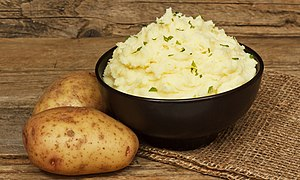

Mashed Potatoes

Description
A bowl of mashed potatoes is a great side to serve! People love it. Fill
it up with butter and sour cream, or whatever! Yum yum yum potatoes.
Ingredients
- Russet potatoes
- Butter
- Sour cream
- Black pepper
- Salt
Steps
- Boil the potatoes.
- Mix the potatoes up in a bowl with an electric mixer.
- Mix in butter and sour cream until the potatoes are nice and creamy.
- Salt and pepper to taste.